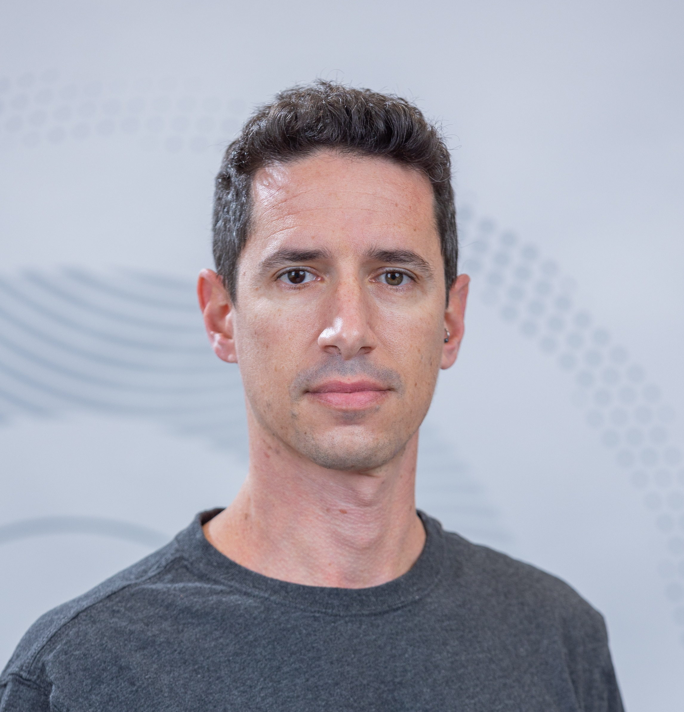
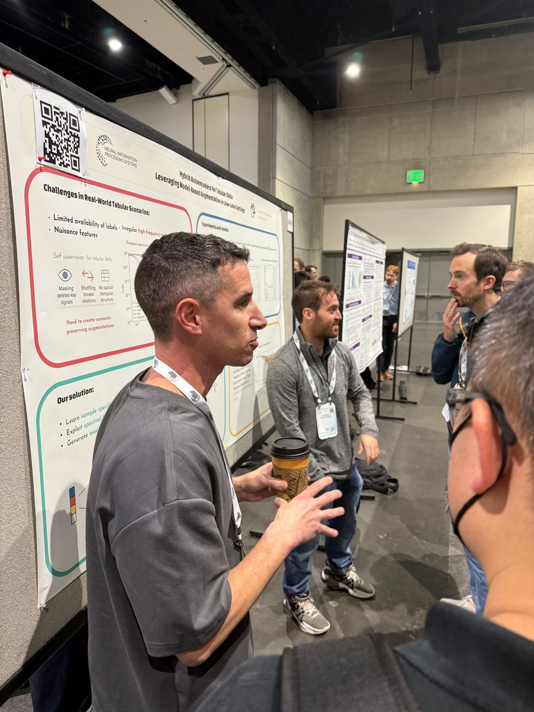
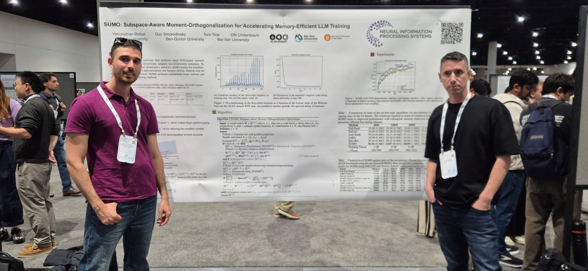
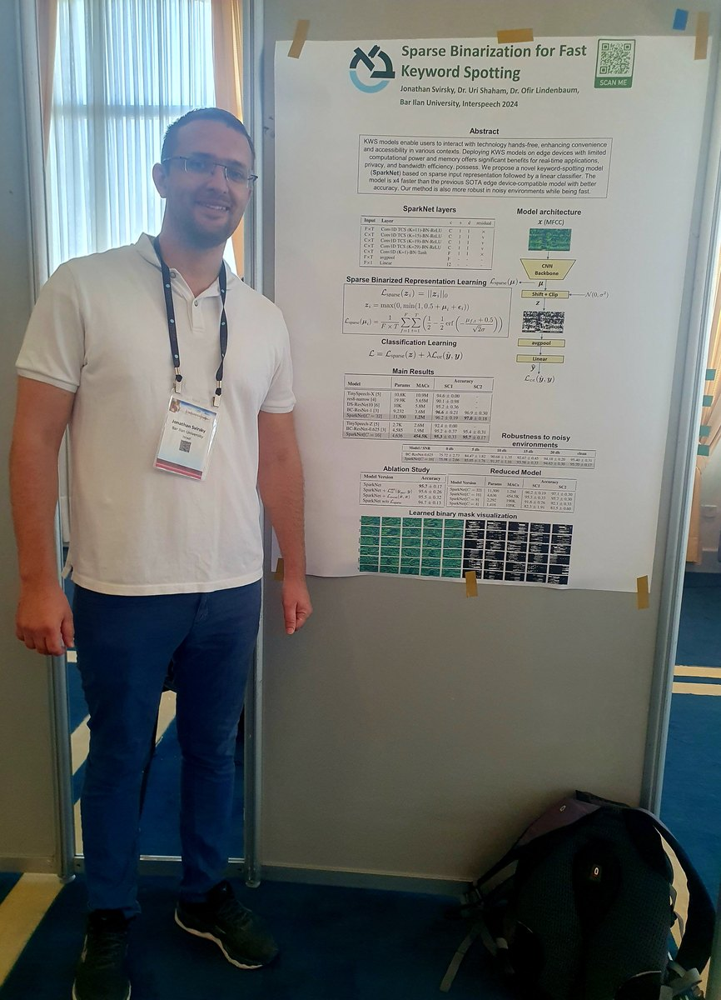

Machine learning for scientific discovery from tabular data
Ofir Lindenbaum
I develop machine learning methods for scientific discovery from tabular data, with an emphasis on interpretability, efficient training, inference, and multimodal data.
Google Scholar · DBLP · ORCID

Welcome
I am Ofir Lindenbaum, an Assistant Professor at the Alexander Kofkin Faculty of Engineering, Bar-Ilan University.
My goal is to enable AI to help us in the process of scientific discovery: from organizing and interpreting complex measurements, to identifying meaningful structure in data, to building models that can support reliable decisions with limited supervision.
My research develops machine learning methods for scientific discovery from tabular data, with an emphasis on interpretability, efficient training and inference, and multimodal data. I am especially interested in structured, heterogeneous, and low-label settings, where useful models need to be both accurate and understandable.
Before joining Bar-Ilan University, I completed a postdoctoral fellowship in applied mathematics at Yale University and a Ph.D. in Electrical Engineering at Tel Aviv University.
Short Bio
Ofir Lindenbaum received B.Sc. degrees in Electrical Engineering and Physics from the Technion, and M.Sc. and Ph.D. degrees in Electrical Engineering from Tel Aviv University. His Ph.D. was advised by Prof. Amir Averbuch and Prof. Arie Yeredor. He then completed postdoctoral research in Applied Mathematics at Yale University, hosted by Prof. Ronald R. Coifman, before joining Bar-Ilan University.
Talks & Videos
Selected talks, interviews, and research videos.


From the Lab



Funding
Research in the lab is supported by the following agencies and institutes.